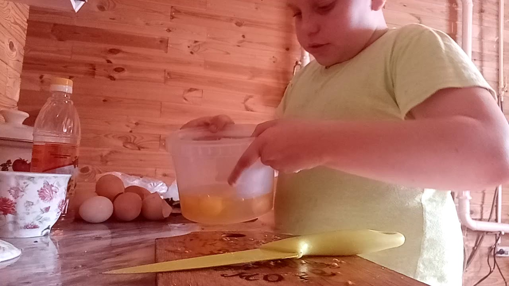

Рецепт вкусных шариков: отличная закуска к новогоднему столу: новости, закуска, рецепт, шарики, праздник, готовка, кулинария
 Новости Беларуси / КулинарияРецепт вкусных шариков: отличная закуска к новогоднему столу
Белновости 29.12.2020 13:48 belnovosti.by@yandex.ruЕсли вы ищете, какую бы быструю, вкусную и простую закуску приготовить к новогоднему столу, попробуйте шарики. Они отлично сочетаются с разными видами алкогольных напитков, смотрятся очень красиво и необычно и точно удивят гостей.
Выберите один из этих 3 рецептов или приготовьте целое ассорти.
1) С сельдью и укропом
Порезать на мелкие кубики одно филе соленой сельди, старательно измельчить 2 отварные картофелины и 2 яйца. Натереть на мелкой терке 100 г плавленого сыра. Все ингредиенты смешать, добавить к ним 50 г размягченного сливочного масла, соль по вкусу. Из получившейся массы скатать маленькие шарики. Обвалять их в мелко порубленном укропе и другой зелени по вкусу.
2) Сырно-крабовые
Предварительно слегка заморозить, а потом натереть на мелкой терке 100 г крабовых палочек. Таким же образом измельчить 2 вареных яйца и 100 г твердого сыра. Все ингредиенты смешать, по вкусу посолить и поперчить, добавить 1 зубчик измельченного чеснока. Скатать небольшие шарики. При желании их можно обвалять в натертом сыре.
3) С брынзой и томатами
Вилкой размять 200 г брынзы, выдавить 2 зубчика чеснока. Смешать сыр и чеснок со столовой ложкой размягченного сливочного масла. Вымыть и высушить помидоры черри. Сформировать шарики из сырной массы, внутрь которых нужно поместить по одной маленькой помидорке. Часть шариков можно «запанировать» в кунжуте, часть - в укропе.
Все шарики перед подачей нужно поставить в холодильник на полчаса.
Фото: Pixabaу
закуска рецепт шарики праздник готовка